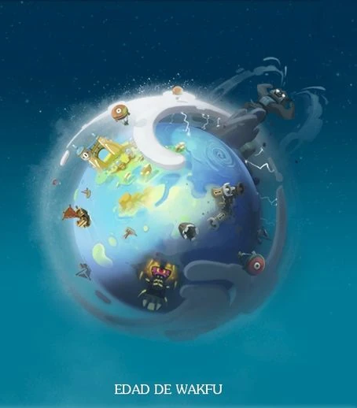
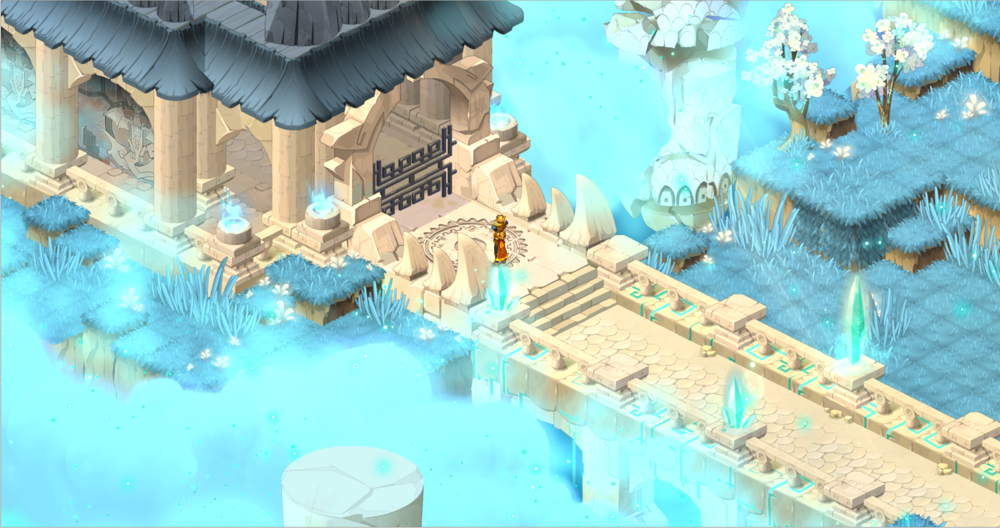
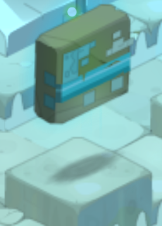
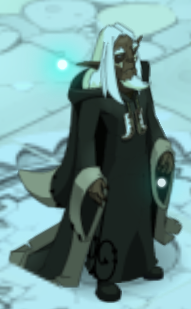
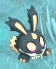
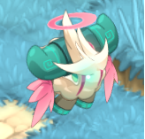

Isla de Rii - Introducción a la aventura
Tras fallar en nuestra misión en la era de los Dofus y ser re/encarnados, empezaremos una nueva aventura pero en la era del Wakfu.
Luego de re/encarnarte generarás una gran onda de Wakfu, estarás a las puertas de la isla de Incarnam, te preguntaras «¿por qué a las afueras y no en la isla de Incarnam?», Hace un tiempo la isla de la dragona Prismaradona (Incarnam es una dragona llamado Prismaradona hija del Gran Dragón que junto a la Gran Diosa o Diosa Selatrop crearon el universo) fue contaminada con la Stasis y los primeros encarnados de esta era no lograron solventar el caos de la isla, (los jugadores que empezaron en la Alpha/beta o antes de la versión 1.81 serían esas las primeras almas de la era del Wakfu) aun cuando contaban con el apoyo del gran alquimista Otomai.

Gran parte de las nubes son violetas porque la Stasis está consumiendo la isla (la Stasis junto al Wakfu son las energías que crearon el universo, Stasis la energía de la destrucción y Wakfu energía de la vida, generando así el ciclo de la vida), pero tranquilo por el momento aprenderemos a desplazarnos, lo más básico del combate peleando con un Wonejo (esté huira después de golpearlo, dejara en el piso parte de una llave), el ecosistema (te darán unos esquejes de árbol de wakfu para plantarlo, verlo crecer y talarlo) y la fabricación (donde crearás la pieza faltante de la llave para abrir el último portón de la isla).
Tras abrir el último portón de Incarnam, donde nos espera de nuevo el Wonejo al cual volveremos a golpear, esté huira y mientras nosotros observamos desde el precipicio si podemos ver el mundo de los 12, poco después volverá junto al Dark Wonejo, serás empujado por el Wonejo de la isla de Incarnam, caerás a la isla Celestial de Rii.

Otomai el alquimista y el dragón Grugaloragrán se encuentran en la isla de Rii, guiados por la poderosa onda de Wakfu de tu re/encarnación. Hacía tiempo que no sentían algo parecido. Ellos creen que es tu primera encarnación (si es tu primera vez jugando, estarán en lo correcto) en el plano material, aunque realmente es la segunda. Igualmente, te aconsejan adaptarte a tu nuevo cuerpo haciendo algunas interacciones en la isla.

La isla celestial llamada Rii propone numerosas enseñanzas.
No dudes en dar una vuelta por el lugar antes de ir a ver a Grugaloragrán
Estas misiones te enseñarán lo básico del combate, posicionamiento, funciones, entre otras cosas, pero tranquilo/a te iré acompañando paso a paso.

A la izquierda de la pantalla veremos un texto flotante, son las misiones que adquieres y «sigues» es decir misiones que seleccionamos para saber qué debemos hacer sin necesidad de abrir la interfaz de misiones (esta se abre con la Q después hablaremos de dicha interfaz), podemos tener un máximo de 4 «seguidas», además hay una pequeña brújula, al darle clic nos aparecerá una flecha al rededor del personaje que nos guiará en el mapa (solo funciona si estamos en la zona de la misión si estamos en otra isla no aparecerá el botón).

Primero te comentaré la ubicación de todo y un par de cositas que necesitas saber. Con la tecla M abrirás el mapa completo, a la izquierda verás diferentes iconos, estos te permiten filtrar diferentes cosas en el mapa, por ejemplo la torre, para las mazmorras, además en la parte inferior derecha verás las coordenadas en X e Y, está función sirve para indicar debidamente a otro jugador algo en específico de una zona o isla, el comando Shift + M abrirá la interfaz de un mini mapa que podrás acomodar a tu gusto.

Como puedes observar, en el mapa hay varias marcas. En la de color rojo estará Huly, al lado de ella estará un altar que te permite cambiar de clase, siempre y cuando no sobrepases el nivel 30.
En la marca morada estará Otomai y el taller para la fabricación de la pócima.
En la marca verde encontrarás a Airyna y además es donde podrás probar a los sacos de papas, criaturas diseñadas para que testes tus daños.
En las marcas rosas encontrarás a 2 monstruos: el Jalato Celestial y el Dark Wonejo .
En la marca amarilla encontrarás a Grugaloragrán, que será el final de todo.
Con estas misiones que deberás aprender lo básico del combate, posicionamiento, funciones, entre otras cosas, pero tranquilo/a, te iré acompañando paso a paso
Habla con Huly (la Aniripsa):

Huly nos contará cómo funcionan las reencarnaciones.
Nos comenta que las almas no mueren, aun cuando dejan su cuerpo, simplemente son redirigidas por el flujo del Wakfu y son reencarnadas en Incarnam.
Tras ese proceso perdemos nuestras memorias de nuestra vida anterior. Ya fuésemos reyes o panaderos, todos partimos desde el mismo punto otra vez en Incarnam.
Por otro lado, ella es un alma en pena, por lo que se convirtió en un gostofo (fantasma) que nunca ha logrado reencarnar (como dato, si se negara a morir o reencarnar se convertiría en un Chafer ) por eso ha dedicado su vida a guiar a encarnarse a los nuevos aventureros.
También nos dice que no somos los únicos en caer en Rii, algunas almas bajan directo al mundo tras encarnarse en Incarnam, además de que cada alma es libre de escoger a qué clase/religión, es decir, de quién quiere ser discípulo/fiel.
Habla con Airyna (la Sacrógrito):

Entra en el dojo y habla con ella.
Nos dará la bienvenida a her dojo, preguntando si nos interesa aprender las bases del combate.
Al aceptar nos darán una nueva misión.

En el dojo celestial, Airyna te ofrece un repaso de las capacidades básicas de combate.
¡Completa todas las pruebas del principiante para obtener el diploma de su escuela!
NOTA: Los PA o Puntos de Acción, son algo que necesitas para poder atacar con prácticamente cualquier cosa. Los PM o Puntos de Movimiento, son lo que te permite desplazarte. 1 PM es una casilla. Los PW/BC/S o Puntos de Wakfu/Brisa Cuadramental/Stasis son un punto extra que, dependiendo de cada clase varía su regeneración y método de regeneración, a diferencia de los PA o PM que se regeneran cada inicio de turno.

En la primera tarea aprenderemos sobre la orientación, a diferencia de otros juegos, acá en Wakfu el daño por los costados aumenta un 10% y por espalda un 25%, por lo que es importante antes de terminar el turno cambiar la orientación de nuestro personaje.

Podemos usar las flechas del teclado para indicar la dirección del personaje o las flechas bajo la vida.
Nuestro objetivo en este combate, es caminar hasta la espalda y golpear al Saco de papas con cualquier cosa.

En la segunda tarea aprenderemos sobre las resistencias elementales y los daños elementales.

Haciendo clic derecho sobre el monstruo, nos abrirá una interfaz del enemigo que nos dirá sus estadísticas (la espada es el daño, el escudo la resistencia). (También funciona con nuestro personaje o el de un aliado).

Lo que debemos hacer es mirar a que tiene 0 de resistencia y pegarle con uno de los hechizos especiales que nos han dado, para hacer daño a la resistencia más baja, esto lo denominamos "debilidad elemental" o "debilidad" (en algunos combates o mazmorras nos darán hechizos especiales para cumplir ciertas condiciones, por favor léanlos antes de iniciar combates).
Deberemos hacer 1 golpe por turno y ganaremos el combate al realizar 4 golpes con las debilidades correctas, además cada turno la "debilidad" posiblemente cambie, por lo que será necesario mirar la interfaz de estadísticas del Saco de papas antes de pegarle (en algunas mazmorras varios monstruos o el jefe tendrán está condición, además algunas clases tienen hechizos para bajar las resistencias de los enemigos).

En la tercera tarea aprenderemos las distancias. En Wakfu se considera un ataque melé/CaC cuando un objetivo está a 2 o menos casillas y un ataque a distancia cuando el objetivo.
Como podemos ver en la imagen, las casillas en verde es la zona melé/CaC del Saco de papas y la zona en rojo es la zona distancia, para ganar deberemos hacer daño posicionándonos en las casillas verdes y usar el hechizo especial que nos dieron, cambiará cada golpe que demos, acá no será necesario pasar de turno.
Esto es importante porque forma parte de las estadísticas de nuestro personaje y las podemos subir para mejorar nuestros daños o curas.

En la cuarta tarea aprenderemos sobre la línea de visión.

En la imagen podemos observar los datos del hechizo, para esto basta con poner el ratón sobre el hechizo y podremos leer los datos, entre ellos están el alcance, daños, efectos, entre otros.
Además, veremos que hay un pequeño ojito, este nos indicará si podemos golpear o no a través de un obstáculo. Para saber si podemos, deberá haber una “X” sobre el ojo, también habrá otro con unas líneas sobre el mismo, esto nos indicará si el hechizo tiene alcance modificable (ya que con algunas partes de equipamiento o subiendo un punto en nuestras estadísticas podremos aumentar el alcance).
Ahora, si el hechizo NO tiene la “X” en el ojo, le denominamos que tiene línea de visión. Si, por el contrario, tiene la “X”, denominamos que NO tiene línea de visión.

Nuestro objetivo será pegar al Saco de papas sin que nos estorben los pedruscos. Cada golpe que hagamos cambiará la posición de estos, además deberemos golpear a 4 casillas de distancia, ya que es el alcance mínimo del hechizo especial que nos darán.

En la quinta tarea aprenderemos sobre la zona de los hechizos. Algunos hechizos hacen daño en más de una casilla, estos los llamamos hechizos en zona, mientras que los que hemos estado usando son hechizos mono objetivo.

Al igual que en los combates anteriores, nos darán hechizos especiales, en este caso serán 3. La idea es que golpeemos a todos los sacos de papas al mismo tiempo, para poder ganar debemos golpearlos 4 veces.
Así mismo cada que los golpeemos cambiaran su posición, por ende deberemos variar el hechizo que usamos para hacer daño (si estás con daño melé y la zona afecta hasta la casilla 3, el monstruo en esa última casilla lo tomará como distancia y el daño se reduce y viceversa si la zona de efecto de tu hechizo golpea a un enemigo que este a melé de ti se reduce el daño si eres de distancia).

En la sexta tarea aprenderemos sobre los hechizos de desplazamiento.
Existen 5 tipos de desplazamientos: Teleportación propia, teleportación aliado/enemigo, transposición (intercambio de posición con el objetivo), empuje y atracción.
Nuestro objetivo es usar los 4 hechizos especiales, tendremos transposición, teleportación propia, atracción y empuje, con estos llevar al Saco de papas a la casilla verde, no tendremos PM y tendremos PA suficientes para usar 3 hechizos en 1 turno y deberemos hacerlo 4 veces.

En la última tarea aprenderemos sobre los efectos de combate.

Nuestro objetivo será generar daño según el efecto que tiene el saco de papas, tendrá 4 efectos aleatorios: Hacerte a más de 6 casillas de distancia y pasar de turno, hacerte en contacto con el Saco de papas y pasar de turno, hacerte sobre una casilla roja y usar el hechizo especial para golpear al Saco de papas y finalmente hacerte en una casilla verde y usar el hechizo especial para golpear al Saco de papas.

Además, podremos ver nuestros estados en la parte superior derecha de la pantalla, de esta forma no será necesario abrir nuestra interfaz normalmente.
Al lado derecho también el orden de turno de los monstruos y personajes, tiempo de turno y una barra verde que se llena más rápido, cuando pasamos turno rápido, esto nos permite elegir una de las 6 opciones de bonus extra, si no se usan se mantienen, pero si se escoge una, otro jugador no podrá usarla, por lo que lo mejor es usarlo cada que aparece.
Recompensa: Experiencia (varía según el nivel) - Emote Saludar.
Habla con Kheperalia (la Sadida):

Ella estará caminando por toda la isla, por lo que deberemos buscarla.
Una vez la encontremos, nos comentará que ayuda a Otomai regulando la fauna y flora de los ecosistemas y responde tranquilamente nuestras preguntas sobre estos.
Nos contará que le gusta el equilibrio de las fuerzas que nos rodean (Wakfu energía de la vida y Stasis energía de la destrucción), por eso le da una gran importancia al equilibrio del ecosistema.
Nuestras acciones afectan al mundo y debemos aprender a mantener el equilibrio.
Nos ofreceremos a ayudarla y aprender sobre nuestras acciones en el mundo.

Kheperalia te ha confiado unas misiones para controlar el ecosistema de la isla celestial.
Cuando muere un monstruo, desaparece para siempre, al igual que los árboles talados o las plantas recolectadas.
Depende de ti replantar en el ecosistema lo que consumes, ¡o podrías desajustarlo!

Con la tecla "W" o clicando en el Jalató bajo la imagen del Miembro De Clan (MDC), en la parte superior derecha de la pantalla abriremos una nueva interfaz.

Con esta interfaz podremos conocer el estado del territorio que maneja él/la MDC.

La sabiduría es una característica que nos aumenta el porcentual (%) de experiencia ganada, 1 punto equivale al 1% de experiencia extra y tiene un tope de 150% (aunque el juego diga 200%).
La prospección aumenta la probabilidad de obtener recursos de monstruos, equipables u otros objetos, esto lo explico mejor en la guía de prospección tiene un límite de 200 puntos.

Abajo del nivel de satisfacción podemos observar unos frascos con una línea a la izquierda que indica la cantidad de monstruos o recursos recolectables y bajo de estos, en algunos casos, una estrella con 2 límites de cantidad.
Si la cantidad de recursos/monstruos está dentro de los límites indicados, aumentará el nivel de satisfacción y esto nos ayudará a subir más fácil los oficios o el personaje de nivel.
También los logos nos dirán qué tipo de recurso. Los monstruos tendrán su propio logo que será una pequeña imagen de la cara de dicho monstruo, mientras que los recursos de oficios serán todos un solo logo por categoría.
Todos los recursos de campesino se indican con el logo del trigo, los de leñador con el árbol y plantas con la flor.
Ahora que hemos aprendido lo básico del ecosistema, podremos hacer las misiones. Empezaremos matando 3 monstruos de la familia Embrialmas ya sea el Wonejo o la Mamá wonejo .

Para esto debemos dar clic derecho en alguno de los monstruos y darle clic izquierdo a la imagen de la espada, de esta forma iniciamos un combate.
También al poner el ratón sobre un monstruo, veremos la cantidad de monstruos en el grupo al que nos enfrentaremos, esta varía de 1 a 6 generalmente, pero acá es un máximo de 4.

Ahora deberemos conseguir 3 semillas de monstruo y plantarlas para mantener el equilibrio del ecosistema.
Para esto debemos hacer el mismo proceso anterior, pero con la diferencia de escoger la pócima en lugar de la espada.
Nos agacharemos para recoger la semilla. Esta animación tiene un tiempo de espera de la recolección y aplica en todos los oficios. En la ciudad de Astrub veremos este tema con más detalle.
Por defecto se agregará a la interfaz de acceso rápido en la parte inferior derecha de la pantalla

También podemos verlas en el inventario al cual podemos acceder con la tecla "I" o accediendo desde la interfaz de accesos en la parte inferior izquierda de la pantalla, dando un clic izquierdo en la bolsa.

En la interfaz de inventario veremos varias cosas.

Primero veremos en la parte superior izquierda la cara de nuestro personaje y abajo de esta un círculo con un "+" esto es en caso de tener el paquete de beneficios , luego en la parte derecha veremos 5 imágenes: Un bolso que será nuestro inventario tal cual. Una llave que serán objetos clave de misiones y otras cosas que algunas se comparten entre los personajes del mismo servidor. -Una estrella que será donde se guardarán todos nuestros cosméticos y, al igual que en la anterior, se comparten entre los personajes del mismo servidor. Un martillo que sirve para romper recursos o equipables para tener más espacio. -Un diablo que esto es parte de una función del juego llamada pacto demoniaco (esta mecánica no se mirará ni se profundizará en ningún apartado de esta página).
Abajo de estos botones veremos una barra de búsqueda y un botón con unas flechas "↑↓". Esto sirve para ordenar el inventario completo de forma automática.
Luego tendremos los "Bolsillos" o "Bolsos" que a la derecha tendremos el botón "↑↓" para order solo ese bolsillo y la cantidad de espacios disponibles que a diferencia de muchos juegos que nos limitan la cantidad de objetos por peso, en este caso se limita por cantidad diferente de objetos, si son los mismos objetos se acumulan entre ellos y se les llama "Stacks", por lo que el límite de espacios se basa en la cantidad de diferentes objetos.
Finalmente tendremos 5 espacios, 3 para "Bolsos" y 2 para "Cajitas". Estas últimas varían su función de almacenamiento según el tipo de caja y la cantidad de kamas.
Para usar las semillas tendremos que usar la tecla "1" (si las tenemos en la barra de acceso rápido) o en el inventario doble clic izquierdo para usar la semilla.


Generalmente tendremos casillas específicas para plantar, ya sean monstruos o recursos.
Si hay un exceso en la zona, el personaje simplemente negará con la cabeza.

Una vez plantadas las semillas, deberemos volver a buscar a Kheperalia.
Le diremos que nos hemos ocupado de los Wonejos, a lo que ella nos dirá que hemos comprendido la fauna y ahora toca la flora.
Una pequeña diferencia de la misión anterior, en esta nos dan 3 semillas de Flor celestial, otra diferencia es un pequeño tiempo de espera para poder recolectar algo que otro jugador plantó, es decir, si otra persona planta las flores, nadie podrá interactuar con ese recurso por un pequeño periodo de tiempo.
Acá les comentaré también un par de diferencias entre cultivos. Los árboles solo se puede sacar esqueje o recolectar la madera, mientras que los cultivos puedes recolectar el recurso y la semilla, pero con siempre con un orden, primero la semilla, luego el recurso. Lo veremos más en detalle en Astrub.
De resto, el funcionamiento es el mismo, tendremos que plantar 3, recolectar 3 semillas y 3 recursos.

Con la mano recolectas la semilla y con la tijera el recurso.
Hecho esto, volvemos a hablar con Kheperalia.
Nos felicitará por cuidar el ecosistema y nos enviará al taller de Otomai para fabricar algunas pócimas.

Si no tenemos los recursos, nos aparecerá una "X" en la receta.

Mientras que al tener los recursos nos saldrá un "✔" es que tenemos los recursos para poder fabricar la receta. Esto será muy útil para aquellos que quieran subir oficios o fabricar algo.

Una vez clicamos en la receta, podremos ver los recursos que pide y, al igual que antes, con "X" o "✔" sabremos si los tenemos o no dichos recursos.
Tenemos que hacer 3 pócimas, para esto solo es clicar en el espacio enumerado, cambiar la cantidad y luego en el martillo para que empiece a fabricar.

En caso de empezar a fabricar algo que no queríamos, tendremos unos 2 segundos para clicar en este icono que remplaza el martillo, para cancelar la fabricación.
Recompensa: Experiencia (varía según el nivel).
Aprovecharemos que estamos al lado del gran Alquimista Otomai y hablaremos con él.

Otomai se presentará como cienciomago y alquimista, que no debemos confiarnos de su apariencia, pues tiene varios siglos vivo, dedicado al estudio de las diversas formas de vida.
Si hablamos con los otros habitantes de la isla y que el mismo también está libre para hacerle preguntas para obtener algo de información, de la cual hablaremos en un momento.
Por ahora, vamos a obtener una misión oculta.
Para esto debemos mostrar un interés por el Mundo de los Doce y su historia.

Con eso dicho le diremos "Me gustaría que me contaras todo lo que sabes sobre el Mundo de los Doce". Con esto tendremos nuestra misión oculta.

Rii es un lugar extraño y lleno de misterios.
A pesar de ello, el Mundo de los Doce, tu próximo destino, sigue siendo un misterio para ti. Efectivamente, no conservas muchos recuerdos de cómo era antes de tu muerte.
Si lo deseas, sigue las indicaciones de Otomai: explora la zona y encuentra el santuario.
Allí podrás obtener más información sobre tu futuro mundo de acogida.
Nos contará que viene del Mundo de los Doce, un mundo poblado por miles de habitantes, varios ecosistemas y maravillosos paisajes repartidos en islas.
Si queremos saber la historia de que dio origen a todo, miremos los frescos en el Santuario, nuestra próxima parada.
Acá puede que te sorprenda el hecho de que habla de islas y no del continente que alguna vez fue, si vienes de dofus, pero las respuestas las tendremos con los frescos.
Sin más preámbulo, nos dirigiremos al santuario.
Una vez dentro iremos a la parte más profunda e interactuaremos con los frescos (los muros que flotan).
Son 3 y los debemos leer de izquierda a derecha.


Estos frescos nos contarán la historia desde el cataclismo creado por Ogrest.
Que es el punto y aparte entre la era Dofus y la era Wakfu, llamado "El caos de Ogrest".
Algunos dirán, ¿quién es Ogrest? Bueno, es un ogro creado por accidente por Otomai. Este se enamoró de Dhatura una muñeca divina creada por el dios Sadida para enamorar a los dragones y así generar Dofus para mantener el mundo a salvo con la armonía que generan (sabrán más de esto en la sección de cronología o leyendo "Los fragmentos encontrados" y los mangas de "Ogrest" en el apartado de Lore).
Según los frescos, el mundo fue sacudido por un ogro, que tenía la idea de encontrar los Dofus. Como sabemos, cuando a un ogro se le mete una idea en la cabeza, es irreversible.
Ogrest sembró el temor en los hombres en su búsqueda por los Dofus. Y así creó su leyenda al ¡reunir los seis Dofus! Nadie imaginó que realizó tal proeza por el amor de Dhatura una de las muñecas de Sadida.
Nadie sabe qué pasó realmente, algunos cuentan que cayó en el abismo y esto partió el corazón de Ogrest... Su tristeza y rabia, ampliados por el poder inconmensurable de los Dofus sumergieron al Mundo de los Doce bajo un diluvio aterrador.
El nivel del agua subió inundando el mundo. Actualmente, han emergido islas, formando archipiélagos poblados por los fieles.
Los dioses impotentes ante el diluvio y la destrucción del mundo. Se inclinaron sobre lo que quedaba y cada uno dio un nuevo don para la supervivencia de sus fieles.
Anutrof creó los merkasacos, sacos mágicos cuyas dimensiones pueden llegar a ser infinitas. Osamodas ayudado por sus dragones, volvió a poblar el mundo con sus criaturas, pero con la condición de que sean los aventureros quienes los cuiden, si el mundo ha de prosperar, no será en detrimento de sus criaturas.
Sadida volvió a dar vida a los árboles, flores y semillas, pero también recordó los árboles de antaño talados por ávidos leñadores, quienes no daban cuartel y el equilibrio quebrado, donde su poder no daba abasto para repoblar la flora por lo que dio una nueva oportunidad a los aventureros y pondría la misma condición que Osamodas.
Siguiendo el ejemplo de estos 3, los demás dioses dieron diferentes dones al mundo: la diosa Feca extendió su escudo sobre la ciudad de Bonta, la diosa Pandawa protegió las tabernas y el dios Yopuka, las forjas...
Algunos discípulos fueron elegidos por los dioses. Serían sus mensajeros, los que indicarían si el equilibrio de la naturaleza se mantenía o se rompía. En cada una de las islas del mundo, estos discípulos se agruparon en clanes. Los llaman: ¡los Miembros de Clan!
Recompensa: Experiencia (varía según el nivel) - Título: Cronista de Incarnam
Ahora solo nos queda hablar y enfrentarnos a Grugaloragrán.

Tras haber explorado la isla, es hora de ir a enfrentarte a Grugaloragrán.
Nos mirará por encima del hombro, nosotros le diremos que hemos recuperado nuestros poderes y estamos listos para enfrentarnos a las criaturas más poderosas del Krosmoz
Grugaloragrán nos dirá que no estamos preparados, que no somos aventureros tan experimentados. Contestaremos que está celoso de nuestro potencial. Y empezará un combate.
El combate se hace solo, no pierdan tiempo, solo pasen turno, porque es imposible ganar.
Recompensa: Experiencia (varía según tu nivel) - Emote Estar asustado - Emote acostarse - Bolsa celestial.
Una vez terminemos el combate, nos darán la última misión que es ir directamente a Astrub, pero antes debemos hacer un logro que nos dará otro emote importante para misiones a futuro.

¡Te has enfrentado a todos los peligros de la isla celestial!
Con este logro les explicaré una función del juego que poco se habla. La invocación de Archismonstruos, estos seres fueron creador por la diosa Aniripsa y la diosa Feca, que sintieron pena por el abuso de aventureros experimentados sobre diferentes grupos de familias de monstruos.
Los archimonstruos aparecen para proteger a su familia de monstruos, pero no siempre son invocados, la mayoría por debajo del nivel 200 suelen aparecer cada cierto tiempo.
En este caso debemos invocar al Dark Wonejo y al Jalato Celestial, para eso debemos cumplir con ciertas condiciones. La primera es esperar 10 minutos tras la muerte de uno de cada uno para poder volver a invocarlos. La siguiente es la cantidad de flores celestiales, si hay un menos de 60 flores aparecerá el Dark Wonejo. La última es que haya más de 130 flores para que aparezca el Jalato Celestial.
Estas son las condiciones y formas de invocar al Dark Wonejo.
Y para el Jalato Celestial.
Son combates muy simples, por lo que no tendrán problemas en emplear todo lo aprendido sobre el ecosistema y el combate.
Recompensa: Título: Encarnado guerrero - Emote Reír.
Ahora si, nos dirigiremos al zaap para terminar la primera parte del tutorial.
¡Ya pareces preparado para ir a Astrub!
Al llegar al zaap el Dark Wonejo tomará venganza y te empujará.
Espero que hayan disfrutado esta lectura y aprendizaje, el resto del contenido sigue en desarrollo. Y se irá publicando a medida que me dé la gana como siempre.
Atentamente: Drarios